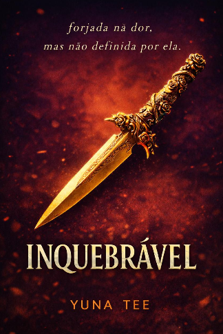

O Caminho de Volta a Mim
Uma viagem de autoconhecimento, identidade e reencontro.
ESCRITORA
Entre histórias, sentimentos e páginas, transformo aquilo que sinto em palavras e aquilo que imagino em histórias.
Conheça os meus livros
UM POUCO SOBRE MIM
Sou escritora e apaixonada por histórias, palavras e pelos pequenos detalhes que tornam cada experiência única.
Conheça a minha história →DESTAQUES
Uma viagem de autoconhecimento, identidade e reencontro.

Uma história de amor, perdas, segredos e escolhas.